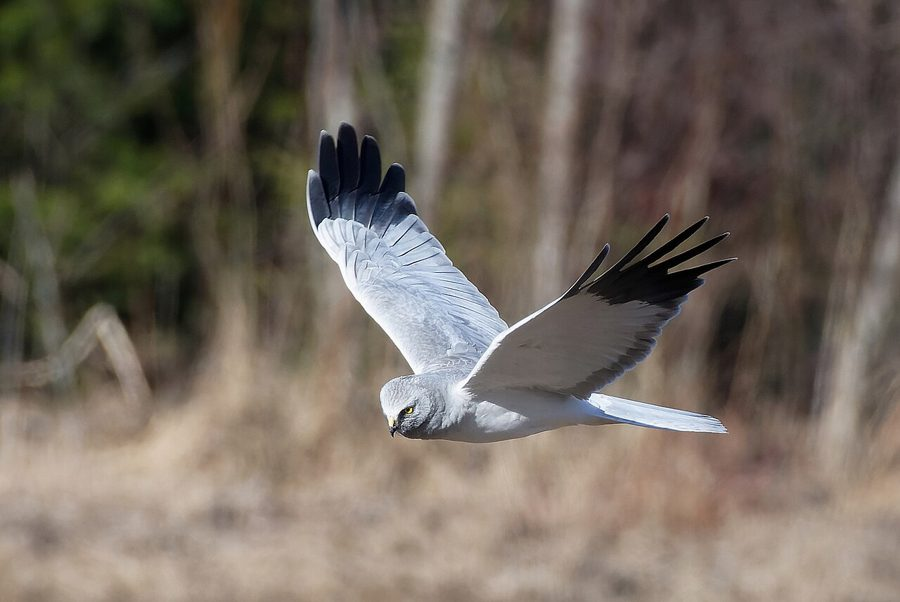

हेन हैरियरHen Harrier
Circus cyaneus · Accipitridae · BRD-0138

- Scientific nameवैज्ञानिक नाम
- Circus cyaneus (Linnaeus, 1758)
- Familyकुल
- Accipitridae
- Hindiहिंदी
- हेन हैरियर
- Local namesस्थानीय नाम
- hen harrier, hen hariyar, harrier, hen harier
- Status hereयहाँ की स्थिति
- native
- Movementआवागमन
- Winter visitor
- IUCNIUCN
- LC
- Reviewसमीक्षा
- audited and independently read
When to look कब देखें
Winter visitorशीतकालीन प्रवासी. Expected mainly in October, November, December, January, February, March, April.मुख्यतः अक्टूबर, नवंबर, दिसंबर, जनवरी, फ़रवरी, मार्च, अप्रैल में अपेक्षित।
Arrives in October–November from breeding grounds in Europe and Central Asia; departs by March–April. Expected hunting over grasslands and wetlands. Documented in Bakhira Bird Sanctuary surveys. All migrants and visitors →
Uses and possibilities उपयोग और संभावनाएँ
Drawn from the documented uses in the profile below, where each is labelled traditional, current or a research lead. All uses →
Tell it apart from इनसे अलग पहचानें
हेन हैरियर / Hen Harrier
Circus cyaneus (Linnaeus, 1758) — Accipitridae
हेन हैरियर — यूरोप और मध्य एशिया से सर्दियों में आने वाली एक मध्यम आकार की शिकारी चिड़िया। नर पक्षी की चाँदी जैसी सफेद-भूरी पीठ और पंख इसे तुरंत अलग करते हैं। पूर्वी उत्तर प्रदेश में अक्टूबर से अप्रैल तक यह घास के मैदानों और दलदलों के ऊपर धीरे-धीरे उड़ते हुए देखी जाती है, अपनी पीली आँखों से नीचे शिकार खोज रही होती है। यह चूहे, पक्षी और कीड़े खाती है।
Quick Identification त्वरित पहचान
| Feature | Description |
|---|---|
| Size | Medium harrier; 43–51 cm long; females larger |
| Male plumage | Silver-grey above; white and black wing pattern; white rump |
| Female plumage | Brown overall; streaked underparts; white rump (both sexes) |
| Face | Owl-like disc; yellow eyes; sharp facial features |
| Wings | Long, narrow; distinctive black wing-tips visible in flight |
| Tail | Barred; long and slender |
| Behaviour | Hunts by gliding low over ground; quarter-searching flight |
| Flight | Buoyant, low, bouncing; distinctive tilting and gliding motion |
Field tip: A slender, medium-sized harrier that hunts by quartering low over grassland with wings held in a shallow V. Males are distinctive silver-grey; females are brown. The white rump is visible in both. Compare with Pied Harrier (which has more dark patching) and Marsh Harrier (which is larger and darker).
हिंदी — कैसे पहचानें:
मध्यम आकार की हैरियर; नर सफेद-भूरा।
मादा भूरी; दोनों में सफेद कमर।
घास के मैदान के ऊपर धीरे-धीरे उड़ते हैं।
पीली आँखें; उल्लू जैसा चेहरा।
Morphology आकारिकी
Biometrics:
| Measurement | Range |
|---|---|
| Total length | 430–510 mm (males smaller) |
| Wingspan | 990–1050 mm |
| Wing (flattened) | 320–350 mm |
| Tail | 190–220 mm |
| Bill | 20–24 mm |
| Tarsus | 55–65 mm |
| Weight | 290–400 g |
Size: 43–51 cm long; females significantly larger than males.
Male plumage: Distinctive. Head, neck, and back pale grey or silver-grey. Wings grey with black tips (primary feathers) and black barring on flight feathers. Underparts white or cream. Rump white. Tail grey with dark barring.
Female plumage: Dark brown above; heavily streaked brown and buff below. Rump white (key field mark). Tail brown with dark barring.
Face: Distinctive owl-like disc formed by ear coverts; yellow eyes; sharp facial markings.
Bill: Hooked, dark with pale cere.
Legs and feet: Yellow or greenish-yellow; slender.
Sexes: Highly dimorphic; males and females look like different species.
Juveniles: Similar to females but with more uniform brown plumage.
Vocalisations. Call repertoire:
- Call: A harsh chee or chee-yow, given in various contexts.
- Alarm call: A louder, more insistent chee-chee-chee when disturbed.
- Often silent: Usually silent while hunting.
हिंदी: तीक्ष्ण ची जैसी आवाज़। शिकार करते समय आमतौर पर चुप रहता है।
Behaviour & Ecology व्यवहार और पारिस्थितिकी
Quartering hunter: Hen Harriers hunt by flying low over grassland in a buoyant, quartering fashion, searching for prey on the ground. They feed on:
- Small mammals (voles, mice, shrews, young hares)
- Small birds (larks, pipits, finches, warblers)
- Large insects (grasshoppers, dragonflies)
- Small reptiles and amphibians (occasionally)
Social behaviour: Solitary or in pairs during winter. Males and females forage independently, occasionally roosting communally at night with other harriers.
Feeding time: Active throughout the day, with peaks at dawn and dusk.
Roost behaviour: Nocturnal roosting on the ground in tall grass or rushes, or in low trees or shrubs.
Predators: Peregrine Falcon, and occasionally other harriers may take individuals. Chicks vulnerable in nest.
Hunting strategy: The characteristic quartering flight, with wings held in shallow V, allows the harrier to surprise prey. Fast, agile flight allows pursuit of flying birds.
हिंदी: घास के मैदान में धीरे-धीरे उड़ते हुए शिकार करता है। छोटे जानवर और पक्षियाँ खाता है। रात को घास में सोता है।
Life Cycle / Phenology जीवन चक्र
Winter visitor: Breeds in Europe and Central Asia (April–August); absent during breeding season. Returns to eastern UP from October and remains through April.
Arrival and departure: First birds arrive in October; peak numbers in January–February; most depart by March–April.
Courtship: Takes place on breeding grounds. Males perform spectacular aerial displays over grassland.
Moult: Partial moult occurs during winter; some feathers renewed for return to breeding grounds.
Site fidelity: Many individuals return to the same wintering territories year after year.
हिंदी: अक्टूबर में आता है, अप्रैल तक रहता है। यूरोप में प्रजनन करता है। सर्दियों में अपने इलाके में शिकार करता है।
Host Plants or Prey आहार
| Food Type | Examples | Feeding Behaviour |
|---|---|---|
| Small mammals | Voles, mice, shrews | Hunted from low quartering flight; caught on ground |
| Small birds | Larks, pipits, finches | Hunted in flight or flushed from grass |
| Large insects | Grasshoppers, dragonflies | Caught in flight or on ground |
| Reptiles and amphibians | Lizards, frogs | Occasionally taken |
हिंदी: चूहे, पक्षी और कीड़े खाता है। घास के मैदान में शिकार करता है।
Predators / Natural Enemies शत्रु
- Avian predators: Peregrine Falcon, other harriers
- Mammalian predators: Jackal, wild boar (chicks in nest)
- Parasites: Feather parasites, blood parasites
हिंदी: बड़ी शिकारी चिड़ियाँ इसका शिकार कर सकती हैं।
Agricultural / Human Relevance कृषि प्रासंगिकता
Protected species: The Hen Harrier is protected under the Wildlife (Protection) Act 1972 (Schedule IV, amended 2022). Hunting is illegal in India.
Pest control: The Hen Harrier feeds on rodents and large insects, providing some benefit in agricultural areas by controlling rodent populations.
Grassland indicator: As a grassland specialist, the Hen Harrier indicates the presence of open grassland habitats with low vegetation and abundant small mammal populations.
Historical records: Mentioned in Mughal hunting records as a game bird; no longer hunted.
Cultural value: Recognized by birdwatchers as a distinctive and graceful winter visitor.
हिंदी: कानून से पूरी तरह सुरक्षित है। इसका शिकार करना कानूनी रूप से निषिद्ध है।
Expected Locally स्थानीय रूप से अपेक्षित
Not a field record. Written from published accounts for eastern Uttar Pradesh. No confirmed local sighting yet — if you have seen it, that is what the atlas needs.
अभी तक स्थानीय पुष्टि नहीं। यह विवरण प्रकाशित स्रोतों से है, किसी अवलोकन से नहीं।
Winter range: Expected in eastern Uttar Pradesh from October to April on grasslands and open areas. Documented in Bakhira Bird Sanctuary surveys (Mishra et al., 2019).
Habitat preference: Open grasslands, marshes, and light scrub rich in rodents and small birds.
Peak occurrence: January–February, when populations from European and Central Asian breeding grounds have moved south.
Nearest published record: Recorded in Bakhira Bird Sanctuary by Mishra et al. (2019).
What a first record would be: A dated photograph showing the bird clearly in flight over grassland in a specific location (with GPS coordinates and date) submitted through the About page of this atlas. The distinctive low quartering flight and colour pattern are diagnostic.
हिंदी: यह पक्षी स्थानीय रूप से अपेक्षित है, न कि देखे गए बतौर प्रेक्षण। अक्टूबर से अप्रैल तक घास के मैदान पर देखे जा सकते हैं। पहला रिकॉर्ड के लिए स्पष्ट फोटोग्राफ चाहिए।
Distribution वितरण
Global range: Breeds across Europe and northern Asia from Iceland to Japan. Winters across Europe, Africa, and Asia. Polytypic with several subspecies.
In India: Distributed as a winter visitor on grasslands and open wetlands, particularly in northern and eastern India.
In Uttar Pradesh: Winter visitor to grasslands and wetland margins, particularly in the eastern districts.
In Basti district / eastern UP: Regular winter visitor to grasslands and open areas, documented in Bakhira Bird Sanctuary surveys.
Research Questions शोध प्रश्न
- What are the precise breeding grounds and migration routes of the Hen Harrier populations that winter in eastern UP?
- क्या इस चिड़िया की सर्दियों की जगहें साल दर साल एक जैसी रहती हैं?
- How does the diet composition of Hen Harrier vary with the abundance of rodents and birds in grasslands throughout winter?
- What is the population trend of Hen Harrier in grasslands of eastern UP over the last two decades?
- क्या खेतों को चारागाह में बदलने से इस चिड़िया के लिए आवास बेहतर हो सकता है? (A child can map grasslands and count harriers at the same sites through the season.)
- How do rodent population dynamics in relation to agricultural practices affect the wintering density and distribution of Hen Harriers?
Similar Species मिलती-जुलती प्रजातियाँ
| Species | Key Difference | Hindi | Field Rule |
|---|---|---|---|
| Pied Harrier (Circus melanoleucos) | Smaller; males have more black patching on back; females darker and more streaked | पाइड हैरियर | Pied Harrier is slightly smaller and shows more black patching in males; more heavily marked females. |
| Marsh Harrier (Circus aeruginosus) | Larger; darker overall; males have grey wing-coverts, not all-grey; different head pattern | दलदल हैरियर | Marsh Harrier is larger and darker; males have two-toned wings (grey and dark). |
| Montagu's Harrier (Circus pygargus) | Smaller; males more finely barred; resident in summer; vagrant in winter | मॉनटेगु हैरियर | Montagu's is smaller with more delicate barring; extremely rare vagrant. |
Field rule: Hen Harrier is distinguished by its silver-grey back in males (or brown streaking in females), white rump visible in both sexes, and characteristic low quartering flight. Males are more uniformly coloured than Pied Harrier; females are less heavily marked than Marsh Harrier.
Taxonomy & Classification वर्गीकरण
Original description. The species was described by Carl Linnaeus in 1758 in the Systema Naturae (10th edition), as Falco cyaneus. Later moved to the genus Circus with other harriers.
Subspecies. Polytypic with several subspecies recognized; C. c. cyaneus is the nominate subspecies breeding in Europe and Asia.
Family and order placement. Order Accipitriformes; family Accipitridae. The genus Circus contains the harriers, a group of slender raptors specialized for hunting low over open ground.
Phylogenetic notes. Closely related to Pied Harrier (C. melanoleucos) and other Eurasian harriers; the genus Circus forms a distinct clade within Accipitridae.
IUCN status rationale. The species is assessed as Least Concern (LC) globally. Populations are stable and widely distributed. Adaptable to various grassland habitats. In India, protected under the Wildlife Protection Act 1972 (Schedule IV).
हिंदी: विश्वभर में पाया जाता है। भारत में सर्दियों में आता है। कानून से सुरक्षित है।
Photo Gallery फोटो गैलरी
No photos yet — add field photos to media/species/hen_harrier/ and run node scripts/sync_photos.js.
Wanted photos:
- Male in flight over grassland
- Female in flight
- Quartering flight sequence
- Perched in low tree
- Detail of head and eye
References संदर्भ
- Linnaeus, C. (1758). Systema Naturae per Regna Tria Naturae (10th edn). Laurentii Salvii, Holmiae. Vol. 1.
- Ali, S. & Ripley, S. D. (1968). Handbook of the Birds of India and Pakistan. Vol. 1 (Divers to Hawks). Oxford University Press, Delhi. Pp. 325–327.
- Grimmett, R., Inskipp, C. & Inskipp, T. (2011). Birds of the Indian Subcontinent (2nd edn). Oxford University Press, Delhi. Pp. 66–67.
- Ferguson-Lees, J. & Christie, D. A. (2001). Raptors of the World. Christopher Helm Publishers, London. Pp. 356–359.
- Mishra, H., Kumar, V. & Kumar, A. (2019). Population structure and habitat utilization of migratory birds at Bakhira Bird Sanctuary, Uttar Pradesh, India. Pakistan Journal of Zoology 52(1): 247–254.
- IUCN Red List (2024). Circus cyaneus — BirdLife International assessment. IUCN, Cambridge. Status: Least Concern.
Source file: species/fauna/birds/hen_harrier.md